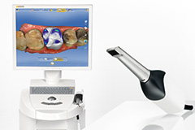
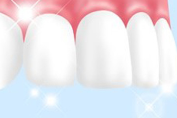

079-562-8471
079-562-8471- Home
- 審美・ホワイトニング
歯の機能回復と自然な美しさの両立をはかりますEsthetic

日本の歯科の保険診療は、歯の機能回復に重点を置いていて、自然な美しさは二の次の傾向があります。しかし、兵庫県神戸市三宮の歯医者「北野坂鳥居歯科医院」は、機能回復とともに自然な美しさも大切だと考えます。そのため、セラミック素材やレジン（歯科用プラスチック）を使った虫歯治療や、天然歯を薬剤で白くするホワイトニングもご提供します。
審美歯科
「審美」とは、美しさを見極め、美の本質や現象を研究することで、歯科では、歯の機能回復とともに「自然さ」や「美しさ」を考慮した素材を使った歯科診療を意味します。
ほとんどが自費診療なので費用を全額負担しなければなりませんが、身体にやさしい素材を使い、精密な治療を受けられるので、お口の健康が保たれるうえ見た目も美しく自然で、それだけの価値がある治療です。
セレックシステムを導入

セレックシステムとは、お口の状態をデジタルスキャンして得たデータをコンピュータ上で設計し、セラミックブロックをミリングマシーンで自動的に削り出して、詰め物や被せ物を作製するシステムです。歯の色に似ているセラミックを使うので、見た目が自然で精度の高い人工歯がつくれます。
保険診療と自費診療の違い
保険診療は、虫歯や歯周病など病気にかかった部分の単純な機能回復が目的で、日本全国どこでも同じ治療が受けられるうえ、治療費の負担が一部で済みます。しかし治療法や使用する素材がかぎられるうえ、見た目の美しさには重点を置いていません。
一方、自費診療は治療方法や使用材料の選択肢があり、装着感や見た目の美しさ、精度の高さなどのこだわりを実現に近づけられます。治療費は全額負担なので一時的には高額の支払いをするように感じるかもしれませんが、美しいうえ精度が高く長持ちするので、長い目で見れば高額とはいえないと考えられます。
自費診療のメリット
- 一人ひとりに合った素材を選べる
- 自然な形や色に仕上げられる
- 変色しにくい素材を選べる
- 精密治療が可能
- 精度の高い治療ができるので長もちしやすい
- 人工歯を作製する歯科技工士とも綿密な連携がとれる
審美素材・メニュー
詰め物（インレー）
ゴールド
金合金でつくる詰め物です。自費診療なのでマイクロスコープを活用した精密治療が可能で、歯を削る量を抑えられ、精密な型取りからの高精度治療につなげられます。金合金は展延性があるので歯との境や段差を少なくできます。天然歯とは異なる色ですが、銀歯よりもお口の中で目立ちません。
パールエステCK（セラミックと樹脂を混ぜた素材）
セラミックと樹脂を混ぜた素材でつくる詰め物です。自費診療なのでマイクロスコープが活用でき、精密型取りからの精密治療が可能です。天然歯に似ている色合いを選べるので、お口の中で目立ちません。強度が高いうえ、適度なやわらかさがあるのでまわりの歯をほとんど傷めません。割れることがありますが、修復可能です。
ジルコニアCK（セラミック）
ジルコニアは強度が高いセラミック素材です。明るい色調なのでまわりの歯との色合わせが難しい反面、強い力で噛み合う部分にも使用できます。強度が高めですが割れてしまうことがあり、その際には修復できません。自費診療なので、マイクロスコープや高精度印象採得（歯の型取り）ができ、高品質な治療が可能です。
前歯
e-max（セラミック）
歯科に特化したセラミックです。スタンダードなオールセラミックである程度の強さがあります。自由診療なので高精度治療が可能です。
ジルコニア
強度と透明感があるジルコニアを使ってつくります。自由診療なので、精度の高い治療ができます。ジルコニアの特性としてプラーク（歯垢）がつきにくいので衛生的です。
KATANAジルコニア
日本のノリタケが開発した歯科用ジルコニアです。透明度が50％以上の質感が特徴です。自由診療なので精度の高い人工歯の作製ができます。
DD cube X2 ML
ドイツのDental Direkt社が開発した歯科用ジルコニアです。日本人の歯に合う色調の再現ができます。
セレック

歯型をスキャンして得たデータをもとに人工歯を設計し、自動でセラミックブロックを削り出すシステムです。
被せ物（クラウン）
ゴールド+ハイブリッドレジン
噛み合う面にはゴールド（20K金属）を使用し、頬側の表面部分にはハイブリッドレジンを使う人工歯です。噛み合う面がゴールド色なので見た目は不自然ですが、強度が高く、強く噛めます。保証期間は8年です。
ハイブリッドレジン+セラミック
丈夫なセラミックをフレームにして、表面はハイブリッドレジンで加工します。CAD/CAMシステムを使って作製し、適合性や透明度も高く、美しく仕上がりますが、噛む力が強いとハイブリッドレジンが割れてしまうことがあります。保証期間は5年です。
ハイブリッドレジン+チタン
生体親和性が高いチタンをフレームにして、表面はハイブリッドレジンで加工し、CAD/CAMシステムを使って作製します。透明感が低いので少し濁った白さで、表面のハイブリッドレジンは強い衝撃で割れてしまうことがあります。保証期間は5年です。
ジルコニア

もっとも強度が高いセラミックで、CAD/CAMシステムを使って作製する適合性の高い人工歯です。白さが明るいので、浮いた感じで目立つことがあります。しかし歯科技工士による加工で自然な雰囲気に仕上げることも可能です。保証期間は5年です。
エンジェルクラウン
弾力性のあるセラミックを使用して、CAD/CAMシステムを使って作製します。適合性が高めですがやや強度に書けるので割れてしまうことがあり、数種類の色調から選択しなければなりません。保証期間は1年です。
調整型ジルコニア
CAD/CAMシステムを使って作製します。20K金属とくらべると噛み合わせのなじみがやや劣りますが、丈夫なセラミックを使うので強度が高く、天然歯と同じような硬さです。光の透過性があり、色味が劣化しないので美しく仕上がります。保証期間は5年です。
ホワイトニング
歯は毎日の飲食によって、だんだんと着色します。加齢によっても歯の内部の黄色味が目立ってくることがあるので、いつのまにか黄ばんでしまうのです。虫歯や歯周病のない健康な天然歯は、削ることなく薬剤で白くできるのをご存じでしょうか？ それが歯科ホワイトニングです。
大きく分けて2種類あり、歯科医院で行うオフィスホワイトニングと自宅で継続して行うホームホワイトニングです。それぞれに特徴があり、効果には個人差がありますので、まずはお気軽に当院にご相談ください。
ホワイトニングの種類
オフィスホワイトニング
歯科医院で行うホワイトニング処置です。歯の表面に高濃度の専用ジェルを塗布してから、特殊な光を当ててホワイトニング効果を促進させます。1回の施術で白さを実感できますが、色の戻りも早めです。大切なイベントが控えている方におすすめです。
ホームホワイトニング
ご自宅で行っていただくホワイトニングです。歯科医院で作製したマウストレーに専用薬剤を注入して、毎日一定時間装着してください。白さを実感するまでには数週間かかりますが、じっくり白くするので白さが長もちします。
デュアルホワイトニング

オフィスホワイトニングを受けたあと、ホームホワイトニングを継続して行っていただく方法です。即効性と持続力の両方の施術のメリットを得られます。
その他のホワイトニング
ガムブリーチ
歯ぐきの黒ずみが気になる方にはガムブリーチをおすすめします。黒ずみの原因がメラニン色素の場合、特殊なレーザーを照射する、または薬剤の塗布で色素を除去します。処置後数日で健康的なピンク色の歯ぐきを取り戻せる処置です。
ガムブリーチの注意点
ウォーキングホワイトニング
歯の神経を取り除いた歯を白くする処置です。歯の内部にホワイトニング剤を注入して、歯の黒ずみを防ぎ、白くしていきます。
【クリスタルアイを使用しています】

一般的に、歯の色の判定はシェードガイドを用いて目視で確認します。しかしそれでは微妙な色味を把握することはなかなかできません。当院では歯の色を数値化するクリスタルアイを活用し、目視では判断しにくい微量な色も数値化可能です。歯科医師にも歯科技工士にも、そして患者様にも分かりやすいシステムです。
料金表
前歯部エステティック歯科治療
マイクロスコープ、ルーペ下での精密治療
※全てプロビジョナル（2回目の仮歯)で形を決定
セレックシステム（※CADCAM）オールセラミック
※CADCAMとは…コンピューター支援によるデザインと製作
※画像は左右にスクロールして確認することができます。
| 商品名 | 特徴 | 保障期間 | 費用 |
|---|---|---|---|
| グラデーションセレックブロック | 色調にグラデーションのついたスタンダードなセレックオールセラミックです。 | 7年 | 140,400円 |
| セレックブロックステイニング | 患者様の色に合わせて色付けをしていく為、より天然歯に近い色に仕上がります。 隣の歯の色に合わせやすいです。 |
7年 | 151,200円 |
| 単色セレックブロック | 色調は単一色です。 | 7年 | 118,800円 |
| セレックブロックマイスター | ベテラン技工士による形の決定、及び色調の付与が特徴です。 形や色を特徴的にしやすいです。 |
172,800円 |
※2度目の色調変更は有料となります。
インレー
※画像は左右にスクロールして確認することができます。
| 商品名 | 特徴 | 保障期間 | 費用 |
|---|---|---|---|
| ゴールドインレー | 体に一番害がなく、さびにくい金属です。 硬さも本来の歯に近いので、奥歯として理想的です。 ただし金色なので審美的にはやや劣りますが、銀色のインレーよりは目立ちません。 |
5年 | 81,000円 |
| ジルコニア | セラミックの白い詰め物です。 顕微鏡レベルの治療です。 精密な型取りができます。 患者様の歯の色に合わせて作製するため、自然な色に仕上がります。 歯とほぼ同じ硬さですが、かみ合わせが強い方によっては割れてしまう可能性もあります。 |
3年 | 102,600円 |
マイスターセラミスト オールセラミック
株式会社六甲歯研 セラミストによる職人技を生かしたオールセラミック
数百種類の色調のセラミックを組み合わせて、色調を追及します。
※画像は左右にスクロールして確認することができます。
| セラミスト | 特徴 | 保障期間 | 費用 |
|---|---|---|---|
| セラミストDT浅田 | セラミストトレーニングセンターにおいてトップクラス。 "優秀賞"受賞の技で形を追求。 歯の白さ、透明度、質感を追求。 |
7年 | 189,000円 |
| セラミストDT早田Dr鳥居 | 15年間の経験豊かな二人のあうんのコラボ治療。 歯並び補正、複数本美容歯科治療時など。 |
7年 | 205,200円 |
| セラミストDT八幡 | 35年のベテラン技工士による職人技。 | 7年 | 248,400円 |
※3度目の色調変更は有料となります。
ハイブリッドレジン
セラミック(7割)と樹脂(3割)を混ぜ合わせたもの
※画像は左右にスクロールして確認することができます。
| 商品名 | 特徴 | 保障期間 | 費用 |
|---|---|---|---|
| グラデーションハイブリット | 色調にグラデーションを付与します。 | 7年 | 97,200円 |
| 単色ハイブリット | 色調は単一色です。 | 7年 | 70,200円 |
デメリット：経年変化による変色あり
※出来上がりの形は大幅に変更はできません。
セレックシステム
| グラデーションセレックブロック |
|---|
| 【特徴】 グラデーションのついたスタンダードなセレックオールセラミック |
| 【費用】 140,400円（税込価格） |
| セレックブロック ステイニング |
|---|
| 【特徴】 患者様の歯の色に合わせて色つけするので、より天然歯に近く仕上がる |
| 【費用】 151,200円（税込価格） |
| 単色セレックブロック |
|---|
| 【特徴】 色調が単色 |
| 【費用】 118,800円（税込価格） |
| セレックブロックマイスター |
|---|
| 【特徴】 ベテラン歯科技工士が形や色調に手を加えるので、特徴的な形状も作製可能 |
| 【費用】 172,800円（税込価格） |
ホワイトニング
| ホームホワイトニング |
|---|
| 20,000円（税込価格） |
| オフィスホワイトニング |
|---|
| 35,000円（税込価格） |
 WEB予約
WEB予約